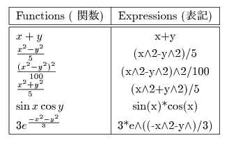

Simple 3D Graph
z=f(x,y)
The applet draws the functions of two variables; z=f(x,y). Using the applet, graph the functions in the table. Then try various functions.

Drag the screen to rotate figure.
The following is the list of functions defined in this applet.